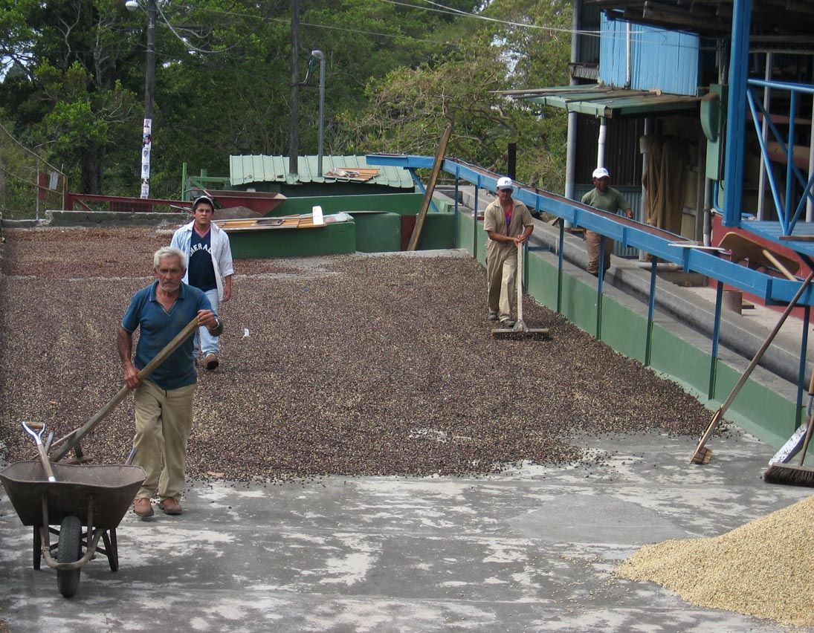

Kohviubade teekond
Ubade töötlusvariandid
Ubasid saab töödelda mitmel erineval viisil. Siin on välja toodud levinuimad ubade kuivatamise viisid.
Honey
Pärast saagikoristust eemaldatakse kohvimarjalt kest ja viljaliha. Kohvimarjale jäetakse
siiski
“mucilage”, ehk marja loomulik suhkruümbris, mille järel kohvimari kuivatatakse päikese
käes.
Protsessi käigus areneb kohvile tüüpiline rohke ja magus maitsestruktuur. Honey-protsess on
üsna
keskkonnasõbralik, sest siin ei kasutata üldse vett, ei sünni süsinikdioksiidi ja
kuivatamine
toimub päikese mõjul.
Honey–protsessi eelised:
Keskkonnasõbralik – Protsessis ei kasutata vett, nagu näiteks kohvimarja kääritamisel.
Päikese
käes kuivatamine ei kuluta energiat, nagu näiteks masinas kuivatamine.
Lihtne – Kohvikasvataja võib töödelda oma kohvimarjad ise, ilma märkimisväärse
investeeringuta
ja müüa seejärel valmis toote ise edasi. Lihtsa töötluse abil saab lisaks töödelda ka
väikeseid
koguseid.
Soodne – Protsessi on kerge viia ellu ilma kalleid investeeringuid tegemata ja ei ole vaja
kasutada keemilisi ühendeid ja pestitsiide.
Töölised ube kuivamiseks laiali jaotamas
Washed
Pärast saagikoristust eraldatakse kohvimarjad veebasseinis ,kus toored ja defektiga marjad
tõusevad vee peale ja küpsed vajuvad põhja. Seejärel eemaldatakse küpsetelt marjadelt kest
ja
viljaliha.
Kooritud kohvimarjadele jääb “mucilage” ehk marja loomulik suhkrukoorik, mis kääritatakse
ära
veebasseinis. Kääritusprotsess kestab sõltuvalt vee temperatuurist 24 tunnist kuni 36
tunnini.
Selline töötlusprotsess nõuab pidevat jälgimist, et marjad ei muutuks liiga hapuks või ei
tekiks
muid mittesoovitavaid omadusi. Pärast “mucilage” eemaldamist loputatakse veel kohvimarjad
puhta
veega enne, kui need asetatakse päikese kätte kuivama. Selline protsess tõstab kohvis esile
puhtad ja elegantsed maitsed ning lisab kohvile hapusust.
Natural
Kohvimari kuivatatakse päikese käes koos kesta ja viljalihaga. Kuivatusaeg on peaaegu kolm nädalat ja võimalikult hea lõpptulemuse saavutamiseks pööratakse protsessi ajal mitu korda kohvimarju ümber. Kui kohvimarjad saavutavad 12% niiskusastme, eemaldatakse kest ja viljaliha. Protsessi käigus tuleb suurepäraselt esile kohvimarja loomulik magusus koos tugeva maitsestruktuuriga. Protsess on tavaline riikides, kus on napid mageveevarud, nagu näiteks Etioopias.